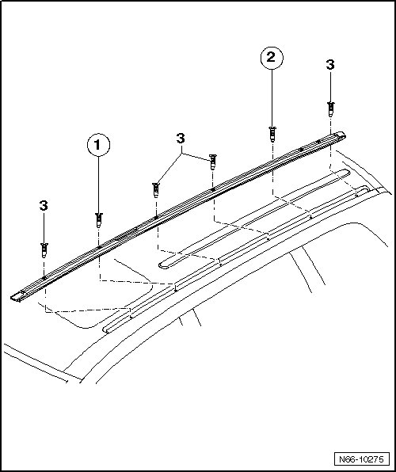

Guide Rail Bolting Sequence
Roof Luggage Carrier
Guide Rail Bolting Sequence
• The specified bolting sequence must be strictly maintained.

- Bolt tightening sequence, first bolt - 1 - and then bolt - 2 -, should be followed.
- Afterwards, fasten remaining bolts - 3 - in any sequence.
- Tightening specifications for bolts: 10 Nm.